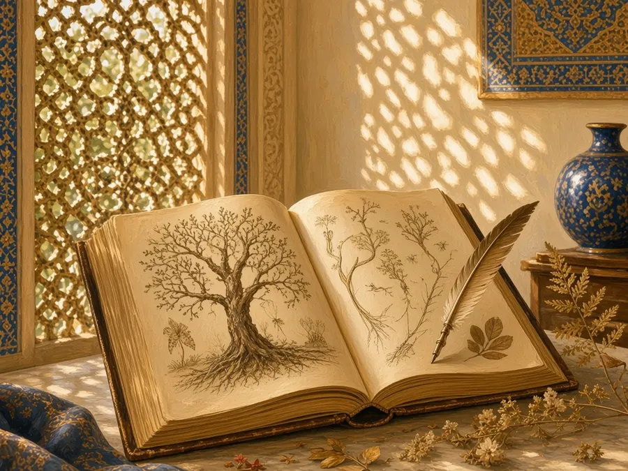

Reality Society
How influence and timing shape the way we live. Each walk goes stage by stage through time, with sources on every card.

How halal lost its cleanliness
“Halal” first came paired with “tayyib”: good, wholesome, clean. Follow how it became a certificate and a logo, and how people are bringing the pair back together.

How the animal got lost
Islam’s teachings on animals cover their whole lives. Follow how farming changed, with the numbers, and what full halal and tayyib looks like.

How yoga went West
Yoga began as a way to still the mind. Follow how it became poses, a fashion, a market, and in some groups a cover for abuse.

How yoga got turned inside out
A practice built on restraint and self-control, rebranded in the West as a sex product. How the flip happened.

How “truth” lost its meaning
“Truth” began as keeping your word. Follow it to the slogan, the brand, the feeling and the AI fake.

How words change meaning
“Nice” once meant foolish and “girl” meant any child. Where English words came from, and how their meanings moved.

How festivals changed meaning
Feast days were pulled towards God, then towards the shops. Plus the “pagan origin” myths, checked.

From guessing brains to guessing machines
We built tools to stop trusting our guessing brains, and ended up with tools that guess.

Evolution meets society
How the idea of evolution grew, and where it ran into the rest of the world.
Every stage is checked against the source linked on its card. Thin evidence is marked. Pictures are painted impressions, not historical images.